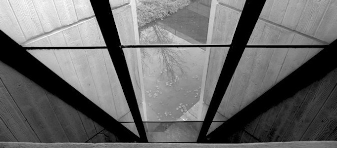
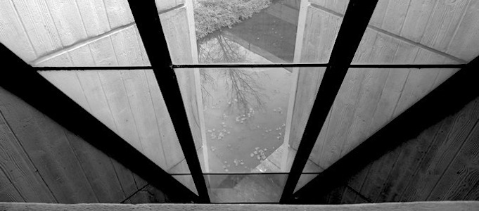

about the house:
Churchill House was designed by Robin Boyd for the Winston Churchill Memorial Trust of Australia in 1969-70 and construction was completed in 1971. The building is an example of the Late Twentieth-Century Brutalist Style (1960-) with its large areas of blank wall and off-form concrete. The complex comprises a number of components: the main building with its east and south wings, the separate north wing or pavilion, the pool and the rear carpark. The main building forms an L shape in plan, and with the north wing it encloses on three sides a courtyard in which the pool is located. The main building is of three storeys with a four storey lift tower at the southeast corner, the north wing is of two storeys, and the carpark is two storeyed.
Churchill House displays several key features of the Late Twentieth Century Brutalist style as follows: Large areas of blank wall, especially the west wall of the south wing; Off-form concrete, such as the west wall of the south wing and the spandrels to the south and east wings. In addition, it displays a number of the other features of this style: Sloping structural fins, being the structural steel members supporting the glazing at the corner between the east and south wings; Precast concrete non-loadbearing wall panels, being the cladding to the wings facing the pool area; Precast fins for sun protection, as above; Vertical slit windows, also being a part of the cladding to the wings facing the pool area.


 

The cost of the works was about $1 million. The building was officially opened on 14 April 1972. Boyd died in 1971 before completion, and W K Williams was engaged by the Trust as its site representative to replace Boyd.
Churchill House is one of a number of Canberra buildings designed in the Late Twentieth Century Brutalist style. These include:
- National Gallery of Australia, 1971
- Cameron Offices, 1976
- Canberra School of Music, 1976
- High Court of Australia, 1980
Churchill House is an early example in this context, and one of only two examples of an office building. While Brutalism has been described as an ethic rather than an aesthetic (Banham 1966:10), both office buildings display a more restrained form compared to the other buildings, several of which were intended to portray a distinctive image in the national capital.